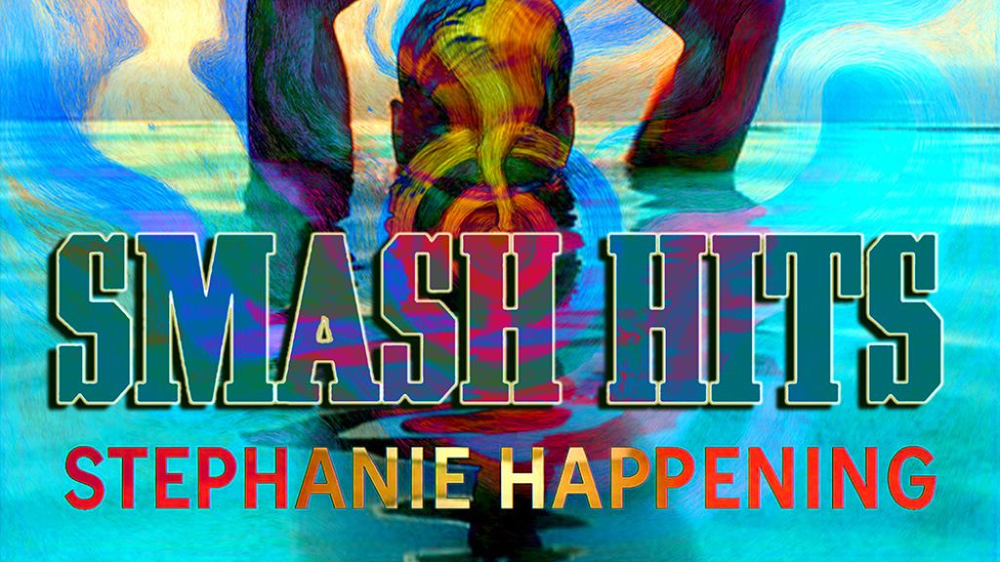

Stephanie Happening Crafts a Defiant Alt-Pop Anthem with “Smash Hits”

The following feature is now included in our online magazine which is also available in print.
Issue #4
Online Magazine | Print MagazineFor more details contact us at: volechomag@gmail.com
London’s alt-pop scene has a new voice rising from its cinematic undercurrents. Stephanie Happening, known for translating resilience and identity into electrifying music, returns with Smash Hits, a single that feels both intimate and expansive. The track balances raw emotional honesty with production that’s as polished as it is exhilarating, a combination that positions Stephanie not just as a singer-songwriter but as a storyteller for a generation navigating reclamation and self-discovery.
From the first shimmering synth, Smash Hits asserts itself as a survivor-coded anthem. It captures that precise moment of breaking free, of shedding past constraints and reclaiming power, whether on screen, on stage, or in the private theaters of personal growth. Bold hooks meet soaring textures, creating a soundscape that is cinematic without ever feeling distant. It’s a track that’s built to move the body while speaking directly to the heart, a balance that few artists navigate so confidently.
Stephanie Happening’s work is inseparable from their lived experience. As an artist managing life with Dissociative Identity Disorder, their music carries a rare emotional specificity and layered storytelling. Every beat, every vocal turn is informed by themes of survival, resilience, and identity reclamation. Smash Hits continues this thread, pairing the euphoria of a danceable rhythm with the weight of lived experience, creating music that functions as both escape and reflection.
Listeners familiar with artists like Rina Sawayama or Christine and the Queens will recognize a similar fearless blending of pop sensibilities with theatrical storytelling. Yet Stephanie’s voice feels uniquely their own — unflinching, urgent, and unapologetically real. The track invites comparisons to the cathartic moments in films like Promising Young Woman or the visual storytelling of contemporary music videos from FKA twigs, where empowerment and defiance play out in vivid, layered ways.
The production of Smash Hits is both cinematic and immediate. Synth layers shimmer and pulse with kinetic energy, while the hook lands with a satisfying snap, demanding both attention and participation. The single demonstrates Stephanie’s keen ear for sync-ready moments, the kind of track that could score a montage of self-realization or play in a club where the collective energy mirrors the song’s narrative of liberation.
What makes Smash Hits stand out is its ability to be both personal and universal. While the song carries the specificity of Stephanie’s lived experience, its themes of empowerment, healing, and self-definition resonate broadly. It’s music that affirms identity while inviting listeners to move, to feel, and to witness themselves in the story being told.
Stephanie Happening continues to shape a distinctive space in alt-pop, where the cinematic and the personal meet, where hooks are weapons of reclamation, and where emotion drives the rhythm. Smash Hits is a declaration of presence, a moment of defiance that encourages listeners not only to dance but to confront and embrace their own truths. For those seeking alt-pop that is both visceral and reflective, this track aligns with the work of contemporary innovators while staking out its own luminous territory.
Follow Our Playlist For More Music!
This dispatch was last updated on October 6, 2025